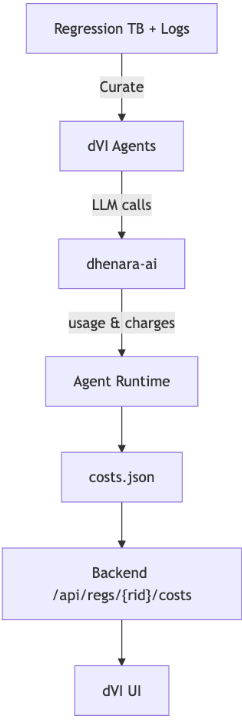
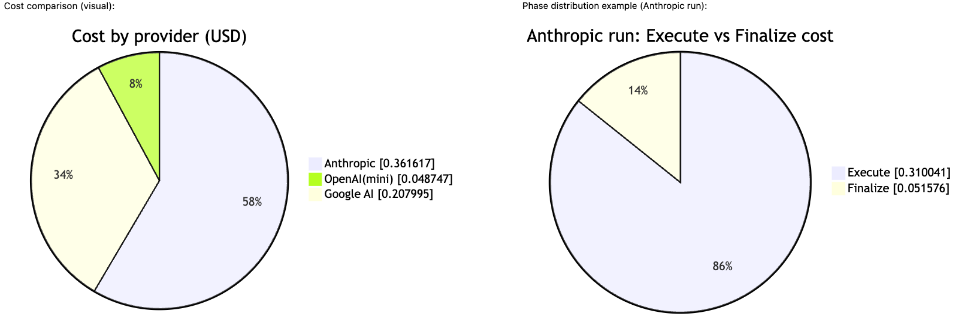

面向持续 SoC 验证工作流中成本感知 LLM 辅助的被动式 Token 计量（Passive Token Accounting）
论文针对 LLM 嵌入 pre-silicon 验证流程（日志摘要、失败聚类、spec Q&A、自动 debug 规划）后的新运营风险——token 开销：持续回归产生海量日志，调用费用持续累积，而传统 EDA 基础设施没有 'LLM 成本' 概念，验证负责人无法回答 triage bot 花了多少钱、哪些测试最烧 token。方法上提出 Passive Token Accounting（PTA），在 dVI™ 产品线中分三层实现：在开源 dhenara-ai 的 LLM 客户端层以 provider 无关的统一 schema 提取 usage 并按 per-million 费率换算成本；在 agent runtime 做多步执行级聚合；在回归边界生成 append-friendly 的 per-regression 成本快照供轻量 API/UI 消费。PTA 全程被动集成，不修改 generator/testbench 代码与回归编排，并支持 per-phase 预算、soft cap 下模型降级与测试/agent 级归因。在基于开源 CORE-V 的 RTL 仿真失败用例上，同一测试跨三家 provider 的 token/成本被一致记录（如 86707 tokens/cost 0.361617 与 74697 tokens/cost 0.048747），验证了跨 provider 统一计量的可行性。
LLM 被广泛嵌入 pre-silicon 验证流程（日志摘要、失败聚类、spec Q&A、自动 debug 规划）后，token 开销成为新的运营风险：持续回归可产生数以万计的日志，每次 LLM 调用的费用不断累积为可观的云账单或挤占 on-prem GPU 容量；agentic 工作流中大量 agent 并发多轮调用使成本更难追踪；传统 EDA 基础设施没有原生的 'LLM 成本' 概念，验证负责人无法回答上周 triage bot 花了多少钱、哪些测试消耗 token 最多、启发式改动是否使 API 账单翻倍等问题。
提出 Passive Token Accounting（PTA），实现在 dVI™（Dhenara Verification Intelligence）产品线中，分三层：(1) 在开源 dhenara-ai 的 LLM 客户端层做 provider 无关的 usage 提取，用统一 typed schema（如 ChatResponseUsage、UsageCharge）支持 OpenAI、Anthropic、Google AI、Azure、Bedrock 及本地模型服务器，并按 per-million token 费率换算成本；(2) 在 agent runtime 做执行级聚合，覆盖多步/工具调用型 agent 工作流，输出 per-node/per-agent 成本；(3) 在回归边界持久化 append-friendly 的 per-regression 快照（.dad 目录下 costs.json、usage.jsonl），由无状态 gateway 通过 /api/regs/{rid}/costs 提供 UI 查询，评估阶段不使用数据库。PTA 是被动式的，不修改 generator/testbench 代码与回归编排，本地与 farm 环境均适用，并支持 per-phase 预算、soft cap 触发的模型降级等预算感知策略。
在派生自开源 CORE-V 仓库的 DUT/testbench 的 RTL 仿真失败用例上，对同一失败测试跨三家 provider 运行 Deep Debug，PTA 在 usage.json 中一致记录 token 用量与成本，例如 78249 prompt / 8458 completion / 86707 total tokens、cost 0.361617；57513/17184/74697、cost 0.048747；79620/10847/90467、cost 0.207995
usage.jsonl 按单次调用记录 provider/model/phase 维度，示例：anthropic 的 claude-sonnet-4-5-20250929 在 execute 阶段一次调用 10582 tokens、cost 0.05073
PTA 以被动方式集成，不修改 generator/testbench 代码与回归编排，本地与 farm 两种运行环境均适用
评估阶段 gateway 无状态、直接读取 JSON artifact，未使用数据库
与依赖单一 provider dashboard、围绕单一 SDK 的定制 wrapper 或通用 observability 管道不同，PTA 在 LLM 客户端层建立 provider 无关的统一 usage/cost 类型系统，可跨 OpenAI、Anthropic、Google AI、Azure、Bedrock 与本地模型一致计量；并将成本遥测锚定到回归 artifact，形成回归级 'source of truth'，从而支持测试/agent 级归因与预算感知策略（soft cap 触发模型降级），且以被动方式集成、不改动现有验证编排、不锁定单一 provider。
相关度级别：high
命中能力域：2.7 EDA/验证自动化与 AI 辅助 | 2.4 设计验证方法学
理由：直接命中 2.7 域的 'LLM/AI 辅助验证/bug 分析' 与 '验证流程自动化'：团队在持续回归中引入 LLM 辅助 triage/debug/spec 问答时，token 成本计量、预算控制与模型选择是这类能力可持续运营的基础设施；论文场景（持续回归、海量日志、多 agent 并发多轮调用、本地与 farm 运行）与团队大规模回归交付场景一致，且核心组件 dhenara-ai 为 MIT 开源、可作为独立 Python 包使用，落地门槛低。对 2.4 域为辅助性命中：论文不涉及 UVM/覆盖率等验证方法本身，而是为 LLM 辅助验证工作流补充成本治理与运营维度。
建议动作：深入精读并做内部分享
Ajith Jose
Dhenara Inc.
ajith.jose@dhenara.com
摘要 - 大语言模型（LLM）正日益嵌入流片前验证流程之中：日志摘要、失败聚类、规格问答以及自动化调试规划。各团队报告了显著的生产力提升，但也面临一种新的运营风险：token 支出。持续回归测试可能产生数以万计的日志；而每一次 LLM 调用，无论多么微小，都会累积成不容忽视的云账单，或与本地部署（on-prem）GPU 容量形成竞争。传统电子设计自动化（EDA）基础设施原生并不具备“LLM 成本”的概念，致使验证负责人无法回答：上周的分诊机器人（triage bot）花费了多少？哪些测试消耗的 token 最多？某次启发式规则的改动是否让我们的 API 账单翻了一倍？
我们提出被动式 Token 记账（PTA），这是 dVI™（Dhenara Verification Intelligence）产品线中的一项实现，它无需修改现有测试或编排脚本，即可提供与提供商无关、低开销的成本可观测性。PTA 从模型响应中提取用量信息，对不同提供商的成本进行归一化，并持续聚合每次回归的快照，供一个轻量级 API 和 UI 消费。该方法支持按阶段预算、软上限下的模型降级，以及对测试和智能体（agent）的细粒度归因——同时保持提供商可移植性。
过去两年间，大语言模型（LLM）已被广泛采用于各类验证流程之中。然而，大多数团队仍将 LLM 运行时视为黑盒。成本可能因冗长日志、级联失败或隐蔽的重试循环而激增。在智能体（agentic）工作流中，这种情况更为混乱，因为大量智能体可能以多轮对话的方式进行并发调用。由于回归测试持续运行，即使是中等程度的浪费也会累积成可观的支出。一个有效的解决方案需要：
PTA 在 dVI™ 中通过将成本遥测集成到 LLM 层（dhenara-ai [1]）、将归一化后的指标传播到智能体运行时，并在回归边界处将其聚合为单一事实来源，从而满足上述需求。
贡献：(1) 在 LLM 客户端层（dhenara-ai [1]）而非单一提供商 SDK 处捕获的与提供商无关的用量与成本模式（schema）；(2) 适用于多步骤/使用工具的智能体工作流的执行级聚合；以及 (3) 一种以回归为范围、便于追加的快照，能够在不修改现有编排的情况下实现归因与预算感知策略。
许多团队依赖提供商仪表板、围绕单一软件开发工具包（SDK）构建的定制封装层，或通用可观测性流水线来了解 LLM 用量。这些方法可能颇有价值，但往往难以跨提供商通用，并且会使指标在不同工具与环境之间碎片化。PTA 则依赖于 dhenara-ai [1] 中一套与提供商无关的类型系统，以一致的方式捕获用量：
dhenara-ai 是采用 MIT 许可证的开源项目 [1]。它公开可用，其提供商适配器与带类型的响应模式（schema）可作为独立的 Python 包直接使用。
这使得 dVI™ 能够以统一的记账方式支持 OpenAI [2]、Anthropic [3]、Google AI [4]、Azure、Bedrock 以及本地模型服务器。同一模式还为智能体框架（DAD）提供支撑，用于呈现每个节点的用量并聚合每个智能体的成本，从而避免为每个提供商单独编写定制适配器。

被动令牌记账（PTA）具有三个层次，与代码库直接对应。
该层以与提供商无关的形式直接从模型响应中捕获使用情况。
该层确保核算在多步骤智能体工作流中保持准确。
该层持久化保存一个以回归为作用域的核算“事实来源”（source of truth）工件。
后端网关通过 /api/regs/{rid}/costs 向用户界面（UI）公开该快照。评估期间不使用数据库；网关是无状态的，直接从工件根目录读取 JSON。
提供这些锚点旨在支持可复现性；该设计在不同提供商和执行模式（同步/异步、流式）下的工作方式类似。
以下与提供商无关的类型来自开源 dhenara-ai 软件包（参见参考文献）。它们展示了贯穿 PTA 使用的规范化 schema：
class UsageCharge(BaseModel): cost: float charge: float | None classChatResponseUsage(BaseModel): total_tokens: int prompt_tokens: int completion_tokens:int reasoning_tokens: int | None
成本计算将每百万 token 的费率转换为每 token 的成本：
cost = round( usage.prompt_tokens * (input_per_million/1_000_000) + usage.completion_tokens * (output_per_million/1_000_000), 6,
dVI™ 将预算感知的调节旋钮暴露在最贴近其发挥作用之处：
PTA 的设计是有意被动的：它无需对生成器/测试平台代码或回归编排做任何更改。它既适用于本地环境，也适用于计算农场（farm）环境。dVI™ 将工件写入专用的 artefact dir 目录下，并在 .dad 目录中维护每次回归的状态，其中包括 costs.json。随后，UI 会呈现以下内容：
这使得 LLM 辅助流程能够与传统 EDA 指标并行，以可预测、预算感知的方式运行。
我们基于开放测试包（open test bundle）以及将 PTA 集成到测试套件中的内部经验，报告三项实际成果。
我们在一次寄存器传输级（RTL）仿真运行期间，针对同一个失败测试，在三家大语言模型（LLM）提供商上运行了 Deep Debug。被测设计（DUT）与测试平台源自开源的 CORE-V 代码仓库 [5-7]。PTA 在 usage.json 中一致地记录了 token 用量，其中包括一条聚合汇总行：
{ 'prompt_tokens": 78249, "completion_tokens": 8458, "total_tokens": 86707, "cost": 0.361617 }
{ 'prompt_tokens": 57513, "completion_tokens": 17184, "total_tokens": 74697, 'cost": 0.048747000000000006 {
{ "prompt_tokens": 79620, "completion_tokens": 10847, "total_tokens": 90467, "cost"：0.20799499999999999 {
usage.jsonl 中的示例行（提供商、模型、阶段）：
{ "phase": "execute", "loop": 0, "model":"claude-sonnet-4-5-20250929", "provider": "anthropic", "prompt_tokens": 9000, "completion_tokens": 1582, "total_tokens": 10582, "cost": 0.05073 }
汇总表（同一测试，不同提供商/模型）：
| Provider | Model | Total tokens | Cost (USD) |
|---|---|---|---|
| Anthropic | claude-sonnet-4-5-20250929 | 86,707 | 0.361617 |
| OpenAl | gpt-5-mini-2025-08-07 | 74,697 | 0.048747 |
| Google Al | gemini-2.5-pro | 90,467 | 0.207995 |
| Provider | Model | Total tokens | Cost (USD) |

dVI™ 中的被动式 Token 计量（Passive Token Accounting）为持续验证中大语言模型（LLM）的可持续使用补上了缺失的一环：与提供商无关、低开销、且直接关联到回归测试产物的成本可观测性。通过在 LLM 层对用量与成本进行归一化、在智能体边界进行汇总，并对外提供简单的每次回归快照，团队便可以设定预算、明智地选择模型，并让辅助功能保持开启——而无需重写流程，也无需被锁定在单一提供商上。
1 条证据未在原文中核对到